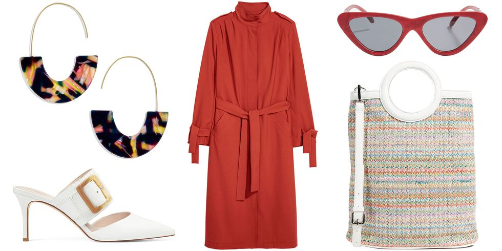

Spring Must Haves
by Giles Hattersley | 3rd Mar 2018
Giving your wardrobe a fresh upgrade each season like a daunting and pricey task-but it doesn't have to be. As we inch closer and closer toward spring, update your look with a few transitional pieces that won't break the bank. From a bold floral dress to bright white mules, scroll down to view this month's best affordable buys. Give your wardrobe the smallest, but most impactful, of upgrades in the form of statement-making hoop earrings. Maybe not,what better way to usher in spring than with a bright floral dress? Brighten up your shoe game with a pair of striking white mules or booties sure to pair perfectly with any look. You can never go wrong in a simple white button-down shirt. A high-waisted, tapered pair of wide-leg pants can go a long way as you bring your wardrobe from winter to spring.